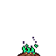
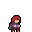

点击继续
梦境日记
✕
封存这个梦
MADELINE
夜 话
她在读
✕
说
📖
正在搬书……
书架还空着。
写下第一篇，它就有了位置。
🌫️
书架暂时打不开（{{ errMsg }}）
Memory Index
记忆目录
共
{{ totalPosts }}
篇 ·
{{ totalDays }}
天
{{ g.monEn }} {{ g.year }}
{{ g.monCn }}
{{ g.monthCnt }} 篇
{{ g.title }}
{{ g.snip }}
{{ g.enDate }}
×{{ g.entryCount }}
← 返回列表
←
→
回去编辑这篇
发成博客
🖼 导出明信片
删掉它
BADELINE
✕
说
BADELINE